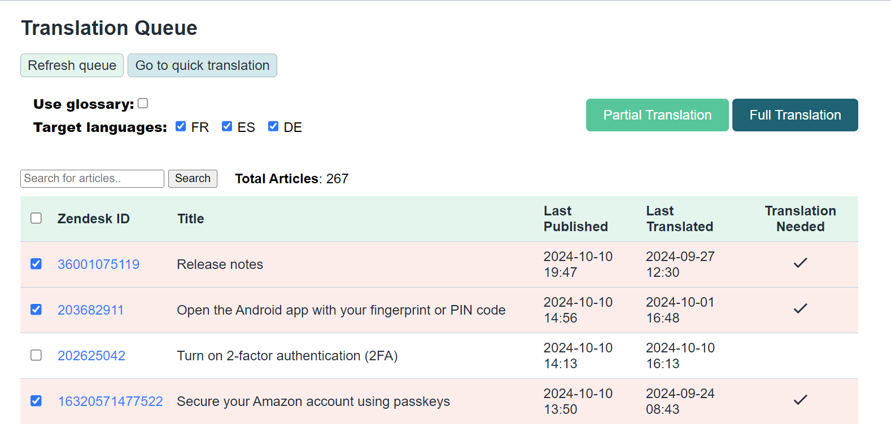
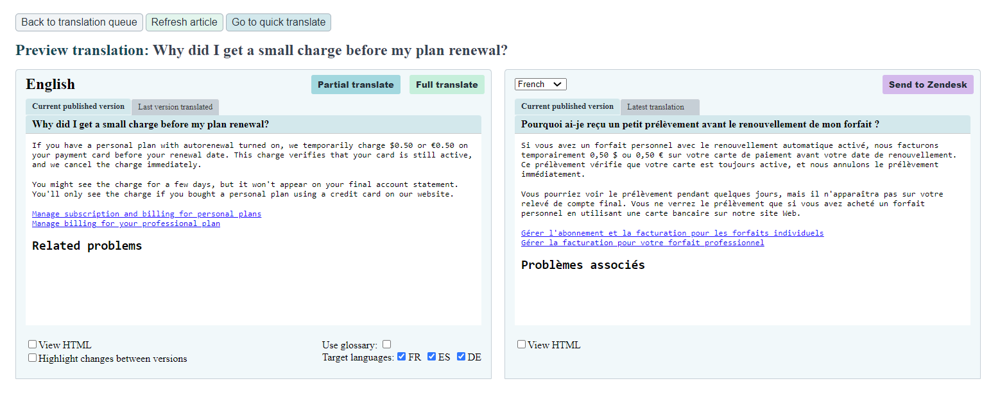
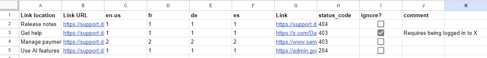

I build AI-powered apps, automations, and monitoring workflows that help teams create and maintain documentation.
Problem: Localizing a website is costly, time-consuming, and potentially error-prone.
Solution: I designed and implemented an LLM-powered app that integrates with content management systems and provides inexpensive, instantaneous, and high-quality translations.
Impact:
Details:


See details
Problem: Company knowledge is scattered across multiple tools.
Solution: I led a cross-functional team that built a hackathon-winning semantic search prototype.
Impact: Won the internal hackathon, validating the approach and garnering enthusiasm for a production-ready version of the tool.
Details:
See details
Problem: Broken links, including anchor links that failed silently, could go unnoticed for days or weeks until someone reported them.
Solution: I built a link validation pipeline into our existing apps and created an automated notification script that alerts the team when it finds link problems. Results also go to a shared spreadsheet so the team can investigate and fix them.
Impact:
Details: A scheduled daily run checks links in published articles, including anchor links, and records problems in a shared Google Sheet. The sheet shows broken link counts by article and locale, along with the error code. An automated script emails the team when issues are found.
Some results require review. For example, a link to a page that requires authentication may appear broken. A team member can select the ignore box in the spreadsheet; if the same link and error code appear on the next run, that choice is preserved.

See details